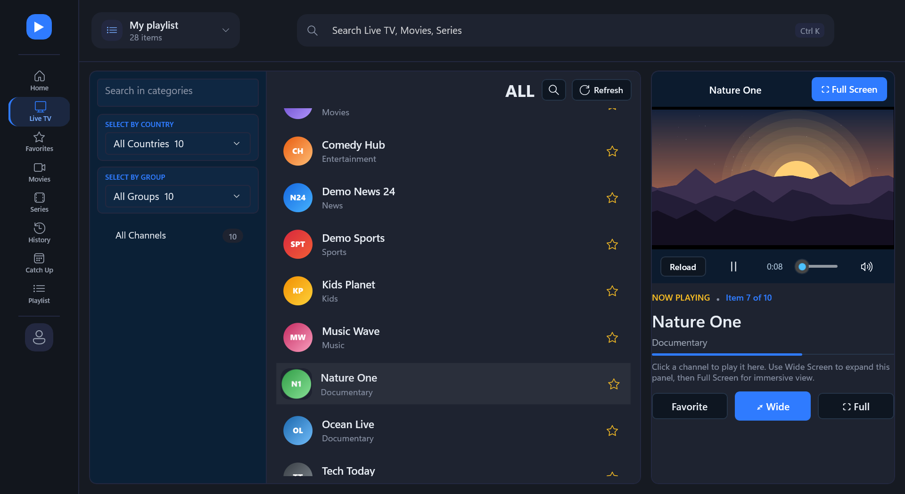
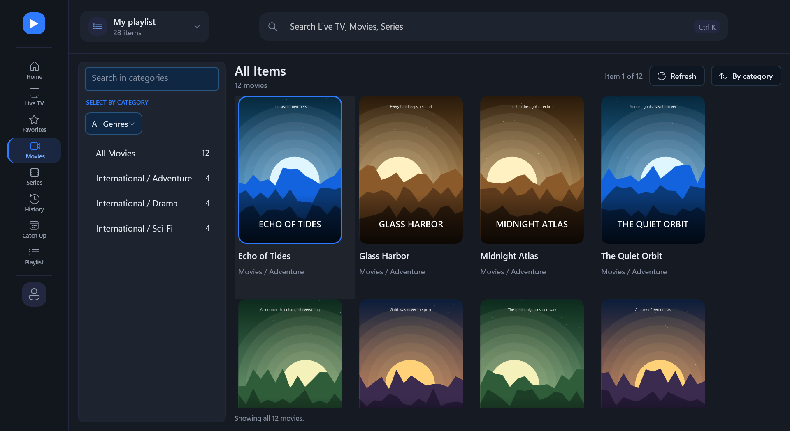
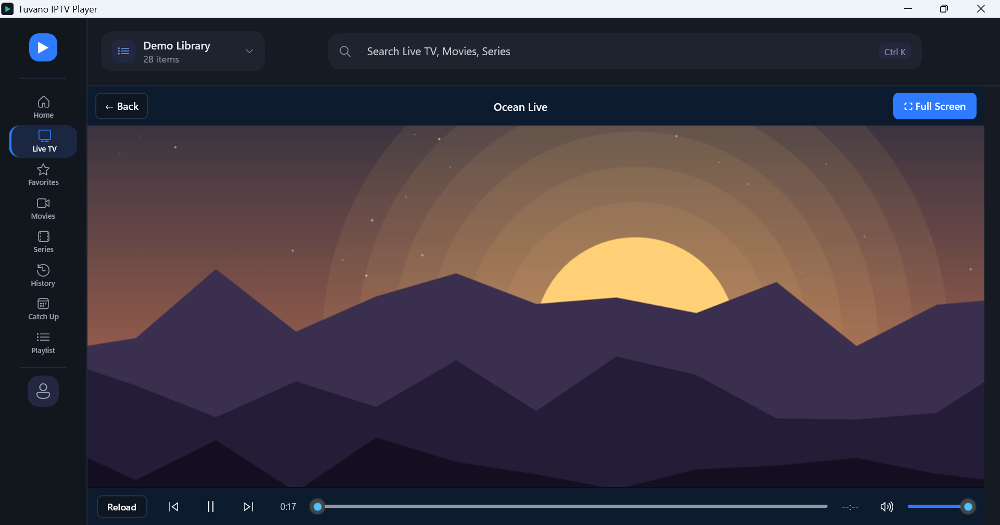

Add the playlist you are authorized to use — an M3U / M3U8 link or file, or an Xtream Codes login — and Tuvano organizes it into Live TV, Movies and Series, with posters, favorites and watch history. Everything you enter stays on your PC.
What it does
Live TV
Channels grouped by category, with search, quick switching, wide and full-screen viewing.
Movies and Series
Poster grid with categories and sorting, seasons and episodes, and resume from where you stopped.
Catch Up
Replay past programmes on channels where your provider offers it.
Built for real connections
Picks the quality your connection can carry and retries automatically when a stream drops.
Plays what IPTV sends
HEVC (H.265), MKV, AC3 and DTS, through the libVLC media engine.
Private by design
No account, no ads, no analytics. Playlists and logins stay on your PC; logins are encrypted by Windows.
A look at the app



The titles, posters, channel logos and video in these pictures are demo content made for the screenshots. Tuvano ships with no channels or films of its own.
Tuvano is a player, not a TV service
Support
Questions, problems or licence enquiries: nuclearscorey@gmail.com